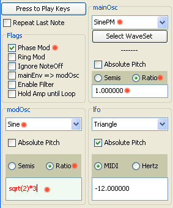

|
Mobileer Instrument Editor
CONFIDENTIAL and PROPRIETARY - © 2002-6 Mobileer Inc.
|
Making an FM style Instrument
In this instrument we will use one oscillator to modulate the frequency of another to make complex tones. We actually use phase modulation instead of frequency modulation. The resulting sound is the same but PM is a little easier to control than FM.
- If the "WhizzyOrgan" instrument is not already open then click on the "Edit" button on the "17. Drawbar Organ" line. 
- Check the "Phase Mod" button (near top left) if unchecked. This means the modOsc output will be added to the phase of the mainOsc to create an FM effect.
- Notice that the waveforms available for the mainOsc are now limited to SinePM, SquarePM, SawtoothPM, and TrianglePM. These are the modulated versions of the standard waveforms. Select "SinePM".
- Set the "phaseModDepth near the middle. This controls the degree of modulation.
- For the modOsc, select the "Sine" waveform.
- You can now control the carrier:modulator ratio which determines the timbre.
- For both the mainOsc and modOsc select the "Ratio" button. This means the oscillator note will be some ratio of the frequency of the note being played.
- Set the mainOsc ratio to 1.0 and the modOsc ratio to 2.0. (Don't forget to hit ENTER if the text is red.) This will give you a 1:2 C:M ratio. Play some notes to hear how that sounds.
- Now set the modOsc ratio to 1.5 for a 3:2 C:M ratio. How does that sound?
- If you use a very unusual ratio then you will get enharmonic bell like partials. Try 2.7351 for the modOsc ratio.
- You can enter formula in this text box. Try entering "sqrt(2)*5" without the quotes then hit enter. It will be calculated.
| Top | Previous | Next |